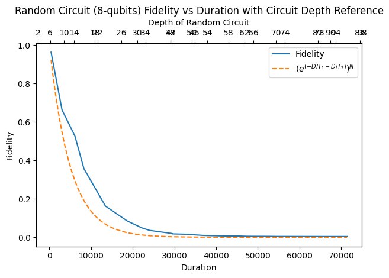
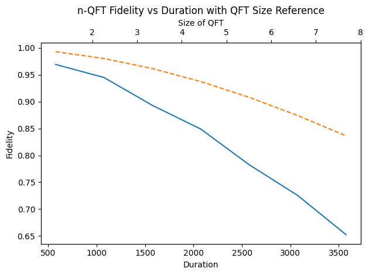

![]()
from qiskit.transpiler.coupling import CouplingMap
import numpy as np
# Import from Qiskit Aer noise module
from mirror_gates.noisy_fidelity import get_noisy_fidelity
from tqdm import tqdm
from qiskit.circuit.random import random_circuit
import matplotlib.pyplot as plt
import numpy as np
from qiskit.circuit.library import QFT
from qiskit.transpiler import CouplingMap
from mirror_gates.noisy_fidelity import T1, T2N = 8
# coupling_map = CouplingMap.from_full(N)
coupling_map = CouplingMap.from_line(N)
data1 = []
for i in tqdm(range(2, 100, 4)):
qc = random_circuit(N, i, max_operands=2, measure=False)
fid, duration, transp, expected_fid = get_noisy_fidelity(qc, coupling_map)
data1.append((i, duration, fid)) # Added depth (i) here 0%| | 0/25 [00:00<?, ?it/s] 4%|▍ | 1/25 [00:00<00:15, 1.52it/s] 8%|▊ | 2/25 [00:01<00:19, 1.18it/s] 12%|█▏ | 3/25 [00:02<00:19, 1.15it/s] 16%|█▌ | 4/25 [00:03<00:18, 1.15it/s] 20%|██ | 5/25 [00:04<00:18, 1.09it/s] 24%|██▍ | 6/25 [00:05<00:18, 1.03it/s] 28%|██▊ | 7/25 [00:06<00:18, 1.02s/it] 32%|███▏ | 8/25 [00:07<00:18, 1.08s/it] 36%|███▌ | 9/25 [00:09<00:18, 1.16s/it] 40%|████ | 10/25 [00:10<00:17, 1.20s/it] 44%|████▍ | 11/25 [00:11<00:17, 1.27s/it] 48%|████▊ | 12/25 [00:13<00:17, 1.32s/it] 52%|█████▏ | 13/25 [00:14<00:16, 1.35s/it] 56%|█████▌ | 14/25 [00:16<00:15, 1.40s/it] 60%|██████ | 15/25 [00:17<00:14, 1.45s/it] 64%|██████▍ | 16/25 [00:19<00:13, 1.53s/it] 68%|██████▊ | 17/25 [00:21<00:13, 1.63s/it] 72%|███████▏ | 18/25 [00:23<00:11, 1.67s/it] 76%|███████▌ | 19/25 [00:25<00:10, 1.75s/it] 80%|████████ | 20/25 [00:27<00:09, 1.85s/it] 84%|████████▍ | 21/25 [00:29<00:07, 1.94s/it] 88%|████████▊ | 22/25 [00:31<00:06, 2.11s/it] 92%|█████████▏| 23/25 [00:33<00:04, 2.12s/it] 96%|█████████▌| 24/25 [00:36<00:02, 2.12s/it]100%|██████████| 25/25 [00:38<00:00, 1.54s/it]Expected fidelity: 9.60821465974009e-17
Expected fidelity: 6.52779751009869e-10
Expected fidelity: 1.5537993518317284e-07
Expected fidelity: 1.487574536904077e-06
Expected fidelity: 3.291008796328393e-05
Expected fidelity: 4.646880900392177e-05
Expected fidelity: 0.00031885528474234146
Expected fidelity: 0.0009914552912741671
Expected fidelity: 0.002265137938156348
Expected fidelity: 0.00474708453201627
Expected fidelity: 0.005742519985323932
Expected fidelity: 0.012303325377327416
Expected fidelity: 0.014502353992713901
Expected fidelity: 0.01696102593499301
Expected fidelity: 0.030367935062946428
Expected fidelity: 0.044957026811720244
Expected fidelity: 0.04889008093421703
Expected fidelity: 0.08643001927870636
Expected fidelity: 0.09467141196821131
Expected fidelity: 0.14829149077067763
Expected fidelity: 0.1370878899752673
Expected fidelity: 0.1723881232610031
Expected fidelity: 0.16047253150531207
Expected fidelity: 0.22566044135606483
Expected fidelity: 0.19601552561410554# sort by duration
data1 = sorted(data1, key=lambda x: x[1])
depths_sorted, durations_sorted, fidelities_sorted = zip(*data1)
fig, ax1 = plt.subplots()
# Plotting the fidelity vs. duration (main line)
ax1.set_xlabel("Duration")
ax1.set_ylabel("Fidelity")
ax1.plot(durations_sorted, fidelities_sorted, label="Fidelity")
# Setting the secondary x-axis for the depth of the random circuit
ax2 = ax1.twiny()
ax2.set_xlabel("Depth of Random Circuit")
ax2.set_xticks(durations_sorted)
ax2.set_xticklabels(depths_sorted)
n_qubits = N
duration_samples = np.linspace(
min(durations_sorted), max(durations_sorted), 500
)
decay_factor = [(1 / T1 + 1 / T2) * duration for duration in duration_samples]
single_qubit_fidelity = [np.exp(-factor) for factor in decay_factor]
total_fidelity = [fidelity**n_qubits for fidelity in single_qubit_fidelity]
label_string = r"$\left( e^{(-D/T_1 -D/T_2)} \right)^{N}$"
ax1.plot(duration_samples, total_fidelity, label=label_string, linestyle="--")
ax1.legend()
plt.title(
"Random Circuit (8-qubits) Fidelity vs Duration with Circuit Depth Reference"
)
plt.tight_layout() # Adjust layout to prevent overlap
plt.show()
N = 8
coupling_map = CouplingMap.from_full(N)
data2 = []
for i in tqdm(range(2, N + 1)):
qc = QFT(i)
fid, duration, transp = get_noisy_fidelity(qc, coupling_map)
data2.append((i, duration, fid)) 0%| | 0/7 [00:00<?, ?it/s]100%|██████████| 7/7 [00:14<00:00, 2.06s/it]# sort by duration
data2 = sorted(data2, key=lambda x: x[1])
sizes_sorted, durations_sorted, fidelities_sorted = zip(*data2)
fig, ax1 = plt.subplots()
# Plotting the fidelity vs. duration (main line)
ax1.set_xlabel("Duration")
ax1.set_ylabel("Fidelity")
ax1.plot(durations_sorted, fidelities_sorted, label="Fidelity")
ax1.tick_params(axis="y")
# Setting the secondary x-axis for the size of QFT
ax2 = ax1.twiny()
ax2.set_xlabel("Size of QFT")
ax2.set_xticks(durations_sorted)
ax2.set_xticklabels(sizes_sorted)
ax2.tick_params(axis="x")
# Adjusting the reference line calculation
unique_sizes = list(set(sizes_sorted))
reference_y_total = []
duration_samples_total = []
for size in unique_sizes:
min_duration = min(
[
duration
for size_curr, duration in zip(sizes_sorted, durations_sorted)
if size_curr == size
]
)
max_duration = max(
[
duration
for size_curr, duration in zip(sizes_sorted, durations_sorted)
if size_curr == size
]
)
duration_samples = np.linspace(min_duration, max_duration, 100)
reference_y = [
np.exp(-size * duration / (T1 + T2)) for duration in duration_samples
]
reference_y_total.extend(reference_y)
duration_samples_total.extend(duration_samples)
ax1.plot(
duration_samples_total,
reference_y_total,
label="e^{-nD / (T_1+T_2)}",
linestyle="--",
)
plt.title("n-QFT Fidelity vs Duration with QFT Size Reference")
plt.tight_layout() # Adjust layout to prevent overlap
plt.show()